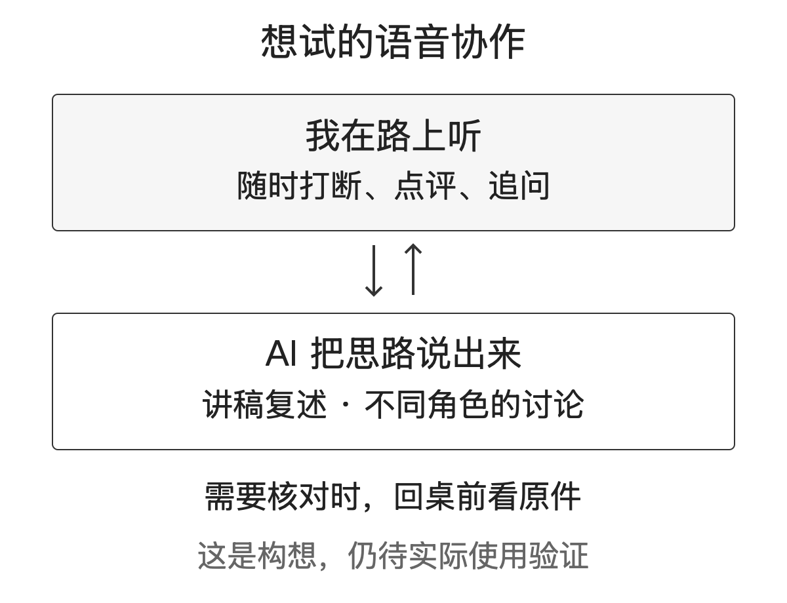

这一年半，我在 AI 上花的时间越来越多，留给散步的时间越来越少。
这话有点尴尬。我到处跟人讲，AI 能把人从重复劳动里解放出来。回到自己身上，醒来就坐到办公桌前，试一个新工具，等一轮结果，再看一遍有没有问题。事情确实做得更多了，坐着的时间也更长了。
至于身材，正在往我不太想看到的方向发展。AI 的迭代速度我追得很紧，自己的腰围倒是没怎么管。
所以，今天想写一件让我蛮高兴的小事：我给自己设计了一个 bot，也就是能接收任务、调用工具干活的 AI 助手。我想试着通过远程语音跟它配合，让一些现在必须坐在电脑前做的事，挪到散步的时候。
先交代清楚，是终于要开始。还没走出什么成绩，也没把想要的功能全验证一遍。
做得越多，越舍不得离开电脑
回头看，这一年半，AI 和法律结合这件事，几乎占掉了我工作之外的兴趣。
我把自己的一些理解和实践写进了《赋能法律人：AI底层思维与应用范式》。也去政府机关、协会和行业内外的单位讲课，把自己琢磨出来的东西拿出来讲，再回去继续试。公开的课程里，有《法律人的 AI 应用实践》，也有《法律人 AI 赋能之路（2026 版）》。讲到具体场景，很多问题就没法靠一句“AI 很厉害”带过去了。
后来又办起了四明山法师 AI 公益夜校。法官、法务、律师一起，从原理学起，再动手做法律场景。我一直想做的是让法律人听得懂技术，也让技术能接上我们真正要处理的问题。
光讲还不够。有些工作反复做，就想把它整理下来，让别人也能用。
比如开源的 contract-review-pro，我把合同审核的方法整理成 AI 能照着执行的步骤：先弄清谁在审、为什么审，再看条款和风险，最后回到怎么改。还有 china-lawyer-analyst，把中国法律问题的分析方法整理成可复用的技能。参与中国法适配的 Claude for Legal ZH，则把这些探索放进更多法律工作场景里。
做这些东西时，我经常会碰到同一种情况：自己觉得已经讲清楚的要求，一交给 AI 执行，才发现还漏着条件。于是补规则，再试。别人拿去用，又会碰到我没碰到的问题。
这个过程很有意思，也很费时间。
而且，我并没有因为开始做这些，就少做原来的工作。客户服务、律所管理、律协事务，都在照常推进。白天处理业务，空下来准备分享，准备夜校，再找时间研究新东西。
我喜欢这些事。麻烦也恰恰在这里，件件都想做。
AI 越能干，我要看的东西也越多
以前，一个想法可能觉得太费事，就先放着了。现在有了 Agent，也就是能连续调用工具、推进任务的 AI，很多东西可以很快做出一个能看的版本。
那就试一下吧。
试完这个，还能顺手试另一个。原来只准备写一份材料，现在可以比较几种写法；原来只有一个模糊的产品想法，现在连界面都做出来了。
产出确实多了，等待和复核却没有跟着消失。
它在跑的时候，我常常还惦记着：下一步会不会需要我补一句话？结果回来以后，又要看它有没有漏条件，引用能不能支撑结论，下一轮该改哪里。尤其碰到法律工作，这些地方很难省。
电脑已经替我做了不少事，我还是坐在电脑前。
以前做记忆球 MemoBall，也是想处理一个很具体的麻烦：随口说出来的安排，能不能先变成一条待确认的日程，再由自己决定是否写进日历。那次琢磨的是，怎么少点几次鼠标。这次我更想琢磨，能不能连椅子也少坐一会儿。
当然，关掉电脑直接出门，是一个完全成立的办法。我也知道。
只是我对 AI 的兴趣还在。让我少试一点，我大概还是会惦记。既然如此，我想试试换一种跟它打交道的方式。
让它说给我听，我再追问
今天设计这个 bot，我先从只读盘点开始：在我划定的范围里，看看电脑和工作区中有哪些工作、进行到了哪里，帮我理一理。
只读的意思是先让它看和整理，不让它改文件、替我发东西。它能读哪些目录、会把哪些内容交给模型处理，仍然要分开管。客户材料和私人信息，也不会因为挂了“只读”两个字，就变得可以随便读取或传输了。
我期待的下一步，是出门以后能用语音接着聊。
比如准备演讲。我把可以使用的讲稿交给它，让它按我的思路讲一遍。我边走边听，听到某处觉得不对，就打断：这一段是不是绕远了？这个概念，没接触过 AI 的律师能听懂吗？换个角度，再说一次。
我自己写的稿子，自己反复看，很容易觉得每一段都需要。变成声音听一遍，或许能发现一些在屏幕前看不出来的问题。这里的“模拟我的演讲”，也不必一开始就追求声音有多像我。先把思路讲出来，让我能听、能插话，就值得试。
另一个特别想试的，是多角色模拟法庭。
先用虚构材料或已经妥善脱敏的材料，让几个 AI 分别站在不同位置说话：一方怎么主张，对方怎么反驳，裁判者又会追问什么。我在旁边听，随时让某个角色停下来，把刚才那一处说清楚。
“你这句话，依据是哪一份材料？”
“如果对方不接受这个前提，还能怎么说？”
“你们是不是都漏掉了另一个可能？”
想到这里，我确实有点兴奋。过去盯着屏幕，一段一段看它们的分析；以后如果能听它们交锋，我再插话，整个过程可能更接近一次讨论。
不过，几个 AI 说得热闹，不等于问题就看全了。它们也可能一起漏掉关键事实，或者把同一个错误讲出几种花样。这种演练能不能帮我发现遗漏，要靠实际使用来看，更不能把模拟出来的结果当成法院会怎么判的预测。
需要核对原件、细看条款的时候，我还是会回到桌前。能在散步时先听清争点、提出问题，回来再查，就已经让我很期待了。

这回，想把散步也放进来
这些年，我总在想 AI 还能做什么。写书、讲课、夜校、开源，做着做着，又多出新的想法。
今天这个念头，跟它们有关系，也带着一点很朴素的私心：我想继续研究这些东西，也想让自己动一动。
远程连接稳不稳，走路时说话方不方便，AI 会不会讲得太长，打断以后能不能接得上，都还要慢慢试。我也没想清楚，边走边聊会不会又把散步塞得太满。真到那时候，该停下来就停下来。
但至少，这件事让我看到了一个可能：不用每次都等到“今天所有东西都试完了”，才轮到出门。
我终于要开始散步了。
文中提到的公开作品：书与课程、四明山法师 AI 夜校、法律技能及产品探索，入口见 chenshi.ai；已核实公开的代码见 GitHub：CSlawyer1985。
作者简介： 陈石律师（主页 chenshi.ai），浙江海泰律师事务所副主任、高级合伙人、房地产与建设工程部主任，第十届宁波市律师协会常务理事、第七届宁波仲裁委员会仲裁员，聚焦建筑房地产、投融资、并购重组及商事争议解决。曾获多家法律媒体与专业机构认可，荣登 LegalOne 2025 中国区建工及房地产实务先锋 45 强、律新社 2025 年度管理合伙人 20 佳（华东），入选《商法》The A-List 法律精英，获评 ALB China 区域市场十五佳长三角地区律师新星，并获律新社 2024 年度并购领域品牌之星。近年来持续推动 AI 与法律实务融合，强调以结构化方法打通技术逻辑、法律判断与商业场景；著有《赋能法律人：AI底层思维与应用范式》，并在多地开展相关主题讲座与分享。